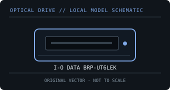

[ OPTICAL DRIVES // IDENTIFIED EXTERNAL MODEL ]
I-O DATA BRP-UT6LEK
Piano-black portable USB 3.0 BDXL/M-DISC writer; the K suffix identifies this color/package SKU in the BRP-UT6LE family.

IDENTIFICATION: Match the exact label and suffix to manufacturer documentation. Ratings are maximums under supported-media conditions, not guaranteed sustained speeds.
Model-specific specifications
| Catalog subcategory | External Blu-ray drives |
|---|---|
| Exact model / SKU | I-O DATA BRP-UT6LEK |
| BD formats and read rates | BD-ROM, BD-R/BD-RE SL and DL, BDXL TL/QL read support, LTH and BD M-DISC. Read: BD-ROM, BD-R/BD-RE and LTH up to 6×; BDXL up to 4×. |
| BD write formats and rates | BD-R SL/DL and LTH up to 6×, BDXL TL up to 4×; BD-RE SL/DL 2×; BD M-DISC up to 4×. |
| DVD formats and read rates | DVD-ROM, DVD±R, DVD±R DL, DVD±RW, DVD-RAM and DVD M-DISC. Read: DVD-ROM and DVD±R/±RW up to 8×; DVD±R DL up to 4×; DVD-RAM up to 5×. |
| DVD write formats and rates | DVD±R up to 8×; DVD±R DL 6×; DVD+RW 8×; DVD-RW 6×; DVD-RAM 5×; DVD M-DISC up to 4×. |
| CD formats and read rates | CD-ROM, CD-R and CD-RW. Read: CD-ROM up to 24×. |
| CD write formats and rates | CD-R and CD-RW up to 24×. |
| USB interface and power | USB 3.1 Gen 1 (USB 3.0)/USB 2.0; USB bus-powered with optional AC adapter for hosts that cannot supply sufficient current. USB 2.0 does not reach all rated maxima. |
| Host compatibility and software | Windows and macOS host data support is specified, but I-O DATA states macOS writing is unsupported for this series. Included B’s Recorder / movie playback downloads are Windows-only; software versions and licensed playback matter. |
| Model caveat | BDXL up to 100 GB is supported; the published table lists BDXL read up to 4× and BD-R TL recording up to 4×. USB power and media quality can reduce attainable speeds. |
Host, media and preservation notes
- Separate drive-level disc support from playback application, region policy, codec licensing and any protected-video/HDCP requirements.
- Use supported media and a stable data/power connection; firmware, media quality, layer, recording mode and USB bandwidth affect actual speed.
- For an archival image, log drive model/firmware, host OS, software, media type, verification result and checksums.
Manufacturer and manual sources
- I-O DATA — BRP-UT6LE series product pageManufacturer product page covering interface, portability and series features.
- I-O DATA — BRP-UT6LE specificationsManufacturer format-by-format read/write speed table and macOS caveats.
Published X-speed ratings are maximum format-specific rates. Actual operation depends on supported media, software, host throughput and operating conditions.